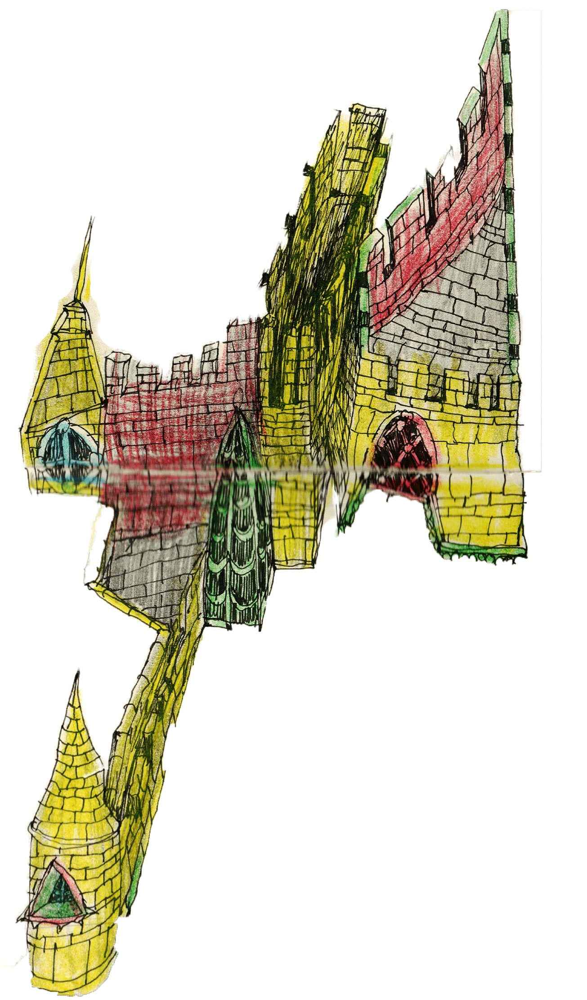
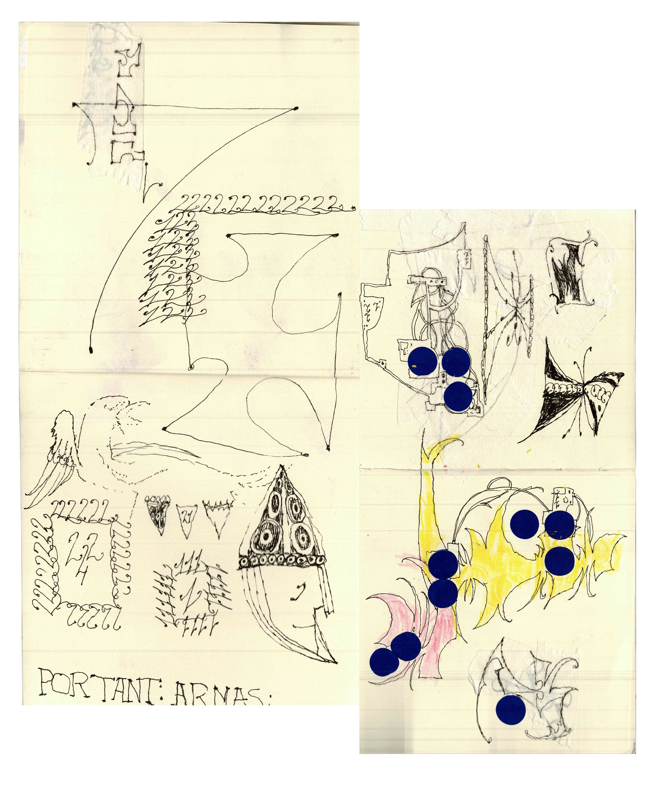
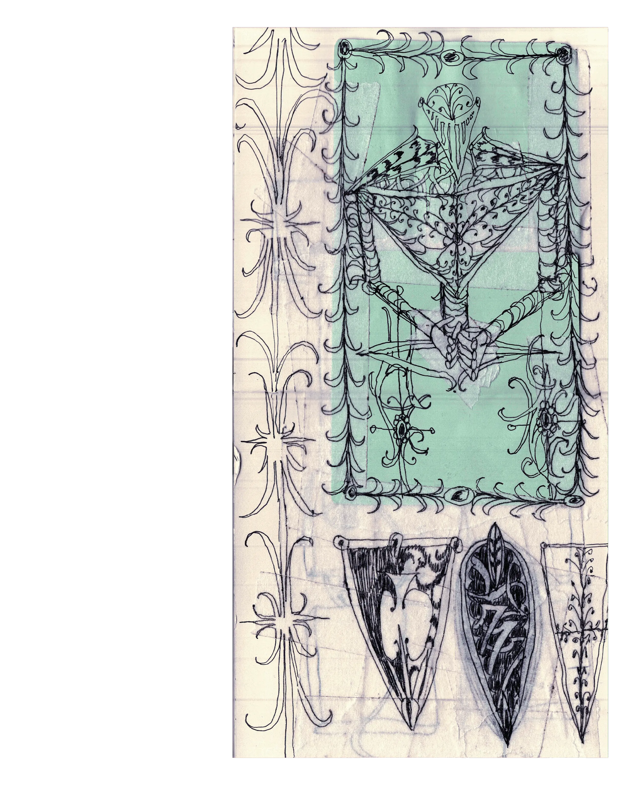
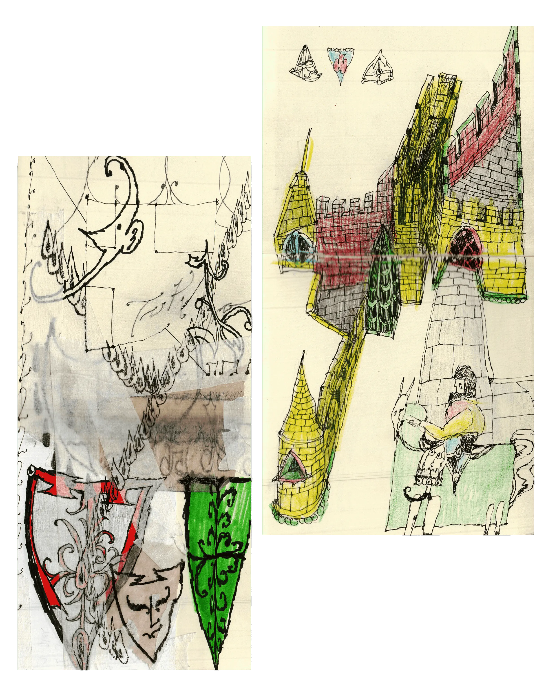
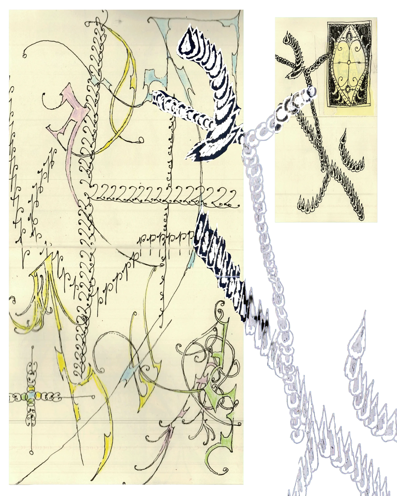

NAIA ESCRIBANO
“Me parece muy loco pensar que alguien quiera llevar mi trabajo en su cuerpo”.


Decidió dejar las ciencias naturales para vivir de la
creatividad. Criada en España, viviendo en Berlín, piden sus
tatuajes en Londres, Lisboa y París.
A veces intentamos esconder lo visible. Quizás
porque no queremos verlo o no estamos preparados para
afrontarlo. Preferimos ir por el camino seguro, no
arriesgarnos. Incluso aunque eso signifique callar nuestra
corazonada.
Los artistas parecen iniciar su proceso
ignorando lo que sienten. Pero, paradójicamente, saben muy
bien que no nacieron para una oficina, sino para algo más.
Los miedos, la incertidumbre y la validación externa son
solo algunos de los sentimientos que pueden surgir en la
mente de estas personas.
Naia Escribano, de 24 años, nos acerca su
experiencia personal como tatuadora, pero principalmente,
como persona creativa.
Naia, para comenzar cuéntanos un poco sobre ti ¿cómo te describirías a vos misma?
Siempre me ha costado un poco describirme a mí misma. Bueno, a ver, sí que podría decir que soy una persona tranquila y que desde pequeña siempre me ha gustado mucho observar, casi como una cámara captando momentos o dinámicas de otras personas. Y no lo sé, siempre he tenido mucha curiosidad.
Puedo ver que eres una persona super creativa. Escribes, eres tatuadora, diseñadora gráfica e ilustradora, ¿de dónde crees que viene toda esa creatividad?
Yo diría que otra vez viene de observar y de tener mucha curiosidad. Una cosa que me encanta de cuando era pequeña y, que todavía me sigue encantando, es dormir y soñar. Pues estoy soñando y estoy volando, y de repente veo un edificio o un paisaje desde diferentes perspectivas que en la vida real es difícil imaginarlo. Entonces, me gusta recrear en mis dibujos esa parte tan mágica que tiene el sueño y, quizás de ahí, también venga un poco la creatividad.
Cuando tienes esos sueños, ¿eres de las personas que se despiertan y lo escriben en un cuaderno?
Siempre soy de escribirlo o sino, se lo digo a alguien. Lo de soñar que vuelo me pasa bastante, desde pequeña. No sé si es que me encantaría hacer eso porque luego le tengo miedo a las alturas, entonces no tiene sentido.
recrear en mis dibujos esa parte tan mágica que tiene el sueño


Tengo entendido que antes de orientarte al arte estudiaste biología, ¿puede ser?
Sí.
¿Cómo fue darse cuenta que esa carrera no era para ti y dedicar tu vida a lo creativo?
Fue un poco lento el proceso. Al principio sí que sabía que tendía hacia la rama artística, pero de pequeña me intimidaba un poco el hecho de hacer el bachillerato de artes. De hecho, antes del bachillerato me hice el test vocacional y me salía un porcentaje alto de lo de artes y yo dije: ‘No. Hago Biología y, si en algún momento me quiero pasar a artes, será mucho más fácil que hacerlo al revés’.
¿Qué era lo que te causaba tanto miedo?
Supongo que un poco lo que escuchas entre la gente, eso de: ‘Es muy difícil o ‘ cómo vas a vivir de eso’. Mis padres nunca me lo han dicho, pero alrededor mío sí que lo escuchaba. De hecho, una de mis amigas de la infancia me dijo: ‘Si eso no tiene ninguna salida, ¿cómo vas a hacer eso?’
Entonces, ¿qué fue lo que te hizo tomar la decisión de cambiarlo todo?
Yo creo que estaba cansada de estudiar cosas con las que no conectaba o que no me llenaban realmente. Me gustaba la parte de biología y de psicología en el futuro, pero odiaba Matemáticas y odiaba Física y Química. Era como un: ‘No puedo más’. Creo que lo que me cambió ahí fue elegir la optativa de dibujo artístico y me dije: ‘¿Por qué no me atrevo?’. Mis padres también me animaron mucho eso.
¿Crees que sin su apoyo no te hubieses atrevido?
Cuando estás en esa edad, de 18 años, al final sí que me importaba mucho su validación. Pero pensé que si ellos me estaban apoyando, significa que igual puedo, ¿no? Me siento una privilegiada porque mis padres sí que eran muy abiertos de mente y me apoyaron y me siguen apoyando en todo momento. Porque igual me podrían haber dicho lo típico de hacer Ingeniería.
¿Notaste algún cambio al pasarte a artes?
Sí. Por una vez no era una estudiante mediocre, sino que por primera vez los profesores me animaban. Fue como ver la luz y pensar qué fácil es todo cuando me gusta lo que estudio, que fácil es sacar buenas notas, aprender o prestar atención.
En tus dibujos y diseños veo mucha referencia medieval, ¿de dónde viene esa influencia?
Me gusta mucho ese mundo. Simbólicamente me parece muy interesante la idea del castillo, lo que fue en su momento y lo que es hoy, cómo un espacio cambia tanto con el tiempo. Claro que puedo estudiar cómo vivían en aquel momento, pero siempre me queda como una ventana de que ahí puede entrar mi imaginación y puedo pensar diferentes historias.
¿Puede ser que esta época medieval esté relacionada con parte de tu vida?
Puede ser. Creo que es porque mis padres, cuando era pequeña, tenían una autocaravana e íbamos de viaje por Francia, por España y por diferentes sitios. Muchas veces veíamos lugares con castillos y creo que en esos países hay bastantes muy bonitos. Creo que las referencias que tomo siempre son cosas que me recuerdan a mi infancia, pero también cosas que me siguen gustando y que quiero seguir reinventando.
Fuiste criada en San Sebastián pero actualmente vives en Berlín, ¿qué te llevó a vivir allí?
Es una buena pregunta. Creo que fue un conjunto. Por una parte, antes de mudarme conocí un proyecto que se llama New Fauves, que es una plataforma de tatuaje contemporáneo y la persona que lo lleva también tiene un estudio de tatuaje. Cuando estaba estudiando diseño gráfico en Bilbao pensé que me encantaría trabajar con él y ayudarle en ese proyecto. Era algo que no sabía si pasaría, porque no había hablado con él en mi vida. Más adelante tuve la oportunidad de conocerle y, de hecho, ahora mismo estoy ayudándole con este proyecto y tatuando en su estudio.
¿Y la otra parte?
La otra parte es que mi pareja es de Alemania, de Munich. Cuando nos conocimos, en San Sebastián, ella no tenía pensado lo de Berlín, pero yo sí. Quería visitar la ciudad y conocer el proyecto de New Fauves, entonces ese fue un poco el nexo.
¿Qué era lo que te causaba tanto miedo?
Supongo que un poco lo que escuchas entre la gente, eso de: ‘Es muy difícil o ‘ cómo vas a vivir de eso’. Mis padres nunca me lo han dicho, pero alrededor mío sí que lo escuchaba. De hecho, una de mis amigas de la infancia me dijo: ‘Si eso no tiene ninguna salida, ¿cómo vas a hacer eso?’
Siendo la arquitectura una parte de tus referencias artísticas, ¿qué es lo que te llama la atención de una construcción?
Hay tantas cosas. Puede ser tanto el color como el ornamento. Incluso las puertas me parecen súper interesantes, es una de las cosas que más miro, también las ventanas. En Berlín veo posters arrancados y me encanta ese espacio vació, porque ahí me puedo imaginar diferentes cosas. Pero depende mucho de la ciudad.
¿Cómo?
Por ejemplo, en San Sebastián hay Art Nouveau. Al final las texturas y los colores son muy interesantes. Todo es muy suave, muy bonito y yo aquí, en Berlín, veo que es todo más duro.
coge y arrastra las imagenes
coge y arrastra las imagenes




¿Notas diferencias entre tatuar a una persona de España y a una de Alemania?
La escena del tatuaje cambia mucho según la ciudad y el contexto. En Berlín, París o Londres hay más movimiento artístico y también más gente acostumbrada a ver el tatuaje como una práctica más autoral o contemporánea. En ese sentido, el tipo de encargos y la relación con el tatuador a veces es diferente. En cambio, en ciudades más pequeñas o en otros contextos de España, especialmente cuando estaba empezando, me encontré con otro tipo de dinámicas y una forma distinta de entender el tatuaje, más centrada en el encargo directo. Y eso hacía que al principio fuese un proceso más lento a la hora de encontrar mi espacio. Creo que ahora ha cambiado bastante, pero en ese momento yo lo viví así desde mi experiencia personal.
¿Como por ejemplo?
En San Sebastián me pasaba mucho que venía gente que nunca se había hecho un tatuaje sin saber antes cómo era el diseño. Entonces me preguntaban cómo iba a llevar eso a cabo. En cambio, en Berlín hay mucha gente que me dice: ‘No tengo idea de qué es lo que quiero exactamente, pero sé que quiero un tatuaje tuyo’.
El cliente te elige por tus diseños, porque conoce tu trabajo, no porque quiere algo en específico.
Claro, también sucede que muchos clientes vienen con una idea propia y yo la adapto a mi lenguaje y forma de trabajar. Y cuando estoy en Berlín me pasa más que la gente viene directamente buscando mi trabajo.
¿Qué significa para tí el tatuaje?
Para mí es colaboración pura. En el dibujo siento que soy totalmente libre de hacer lo que quiera, pero al tatuaje me gusta verlo como una conversación, como una colaboración. De hecho, hay veces llego a resultados que no hubiese podido llegar si lo hubiese pensado sola. Entonces, esa parte humana es lo más importante. Por eso diría que es colaboración, conexión, intercambio.
¿Qué sientes al dejar un diseño tuyo en el cuerpo de otra persona?
Me parece muy bonito, muy loco el pensar que alguien quiera llevar mi trabajo en su cuerpo. Ni siquiera está en la pared, en su cuarto. Está en su brazo. Por eso estoy muy agradecida con la gente que confía en mí, por tatuarse conmigo, porque sé que requiere mucha confianza y vulnerabilidad que yo aprecio. Por eso es que hay que tratarlo como algo muy especial.
Habiendo dibujado tanto en papel como en digital, ¿qué tiene de diferente hacerlo en la piel?
Es muy distinto. El cuerpo al final tiene volúmen, hay que pensarlo diferente y creo que es eso lo que lo hace tan interesante. Hay que jugar con la composición, pensar cómo complementar los tatuajes que ya tienes en el cuerpo y colaborar con ellos. Porque no se trata de ir con mi ego y acaparar todo, sino de pensar qué te encaja a tí como persona y qué es lo que puedo aportarte. Se trata de adaptarse a la persona.
¿Cómo definirías el estilo que tienes al tatuar?
Tengo mucho mix de cosas. A veces son más ornamentales, figurativas o más abstractas y naif, entonces no lo sé. Creo que la gente lo llama tatuaje de autor pero a mí no me gusta decir eso.
¿Por qué no?
Me parece pretencioso, es como decir: ‘Soy artista’. No me gusta identificarme con un ‘yo soy’, siento que te cierra. Al final sí que dibujo, sí que soy diseñadora gráfica, pero yo nunca diría ‘yo soy tal…’
¿Y decir ‘yo soy tatuadora’?
Ahí sí. Aunque diría ‘yo tatuo’.
Tienes lista de espera en Lisboa, París y en Londres, ¿cómo llegás a gente de otros países?
Creo que Instagram es una plataforma que, dependiendo de cómo la uses, puede ser una herramienta muy útil o algo que simplemente te hace perder el tiempo. En mi caso no lo utilizo tanto como algo que promuevo activamente, pero sí me sirve como una forma de conexión. Hay gente que me escribe desde otras ciudades diciendo que quiere tatuarse conmigo, y a partir de ahí voy organizando y respondiendo a esas solicitudes. Al final, lo importante para mí es mostrar mi trabajo de una forma que permita que la gente entienda cómo funciono, y eso genera más confianza.
¿Hay algún proyecto que guardes con mucho cariño?
Tengo un montón, pero por diferentes razones. Algunos se quedan conmigo porque la conversación con esa persona fue súper interesante o porque nos llevamos muy bien. Otros, porque el proyecto quedó súper interesante, ya sea por las buenas referencias o por esa combinación entre buenas ideas y que la persona y yo conectamos muy bien.
¿Qué parte de tí crees que se llevan tus clientes?
Creo que la experiencia que han tenido, si se sintieron seguros, de lo que hemos hablado, de la música que hemos escuchado. Yo intento pensarlo como clienta también y siempre intento facilitar el proceso lo máximo que pueda, que la persona se sienta cómoda y segura. Porque al final es un momento muy personal. Así que quiero creer que se llevan eso, una buena experiencia.